Làm quen với giao diện của Godot
Trang này sẽ giới thiệu ngắn gọn về giao diện của Godot. Chúng ta sẽ xem qua các màn hình chính và dock khác nhau để giúp bạn định hướng.
Xem thêm
Để xem chi tiết đầy đủ về giao diện trình chỉnh sửa và cách sử dụng, hãy xem Hướng dẫn trình chỉnh sửa.
Project Manager
Khi khởi động Godot, cửa sổ đầu tiên bạn thấy là Project Manager. Trong tab mặc định Projects, bạn có thể quản lý các dự án hiện có, import hoặc tạo dự án mới, và nhiều thao tác khác.

Ở phía trên cửa sổ có một tab khác tên là Asset Library. Lần đầu tiên vào tab này, bạn sẽ thấy nút "Go Online". Vì lý do quyền riêng tư, Project Manager của Godot mặc định không truy cập internet. Để thay đổi điều này, hãy nhấp nút "Go Online". Bạn có thể thay đổi tùy chọn này sau trong phần cài đặt.
Khi chế độ mạng được đặt thành "online", bạn có thể tìm kiếm các dự án demo trong thư viện asset mã nguồn mở, nơi có nhiều dự án do cộng đồng phát triển:

Bạn có thể mở cài đặt của Project Manager bằng menu Settings:
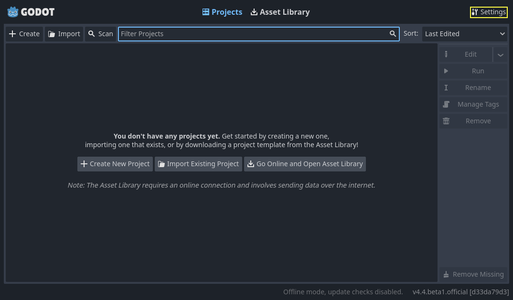
Tại đây, bạn có thể thay đổi ngôn ngữ của trình chỉnh sửa (mặc định là ngôn ngữ hệ thống), theme giao diện, tỷ lệ hiển thị, chế độ mạng, và cả quy ước đặt tên thư mục.
Xem thêm
Để tìm hiểu tường tận về Project Manager, hãy đọc Sử dụng Project Manager.
Cái nhìn đầu tiên về trình chỉnh sửa của Godot
Khi bạn mở một dự án mới hoặc dự án có sẵn, giao diện trình chỉnh sửa sẽ xuất hiện. Hãy cùng xem các khu vực chính của nó:
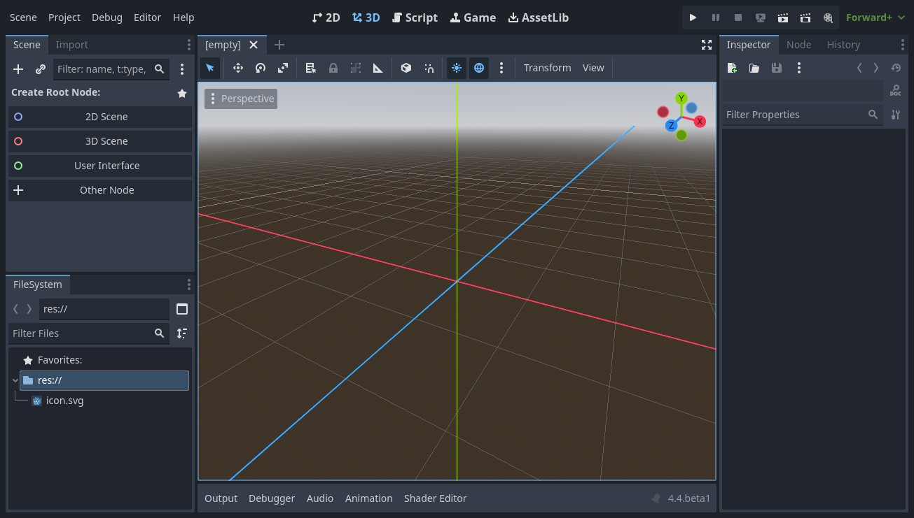
Theo mặc định, dọc theo cạnh trên của cửa sổ là menu chính ở bên trái, các nút chuyển không gian làm việc (workspace) ở giữa (workspace đang hoạt động được làm nổi bật), cùng các nút chạy thử và nút bật/tắt Movie Maker Mode ở bên phải:

Ngay bên dưới các nút workspace là các scene đang mở dưới dạng tab. Nút dấu cộng (+) ngay cạnh các tab sẽ thêm một scene mới vào dự án. Với nút ở ngoài cùng bên phải, bạn có thể bật/tắt chế độ không phân tâm, giúp phóng to hoặc khôi phục kích thước viewport bằng cách ẩn các dock trong giao diện:

Ở giữa, bên dưới bộ chọn scene là viewport với thanh công cụ ở phía trên, nơi bạn sẽ tìm thấy các công cụ khác nhau để di chuyển, co giãn hoặc khóa các node của scene (hiện đang ở workspace 3D):
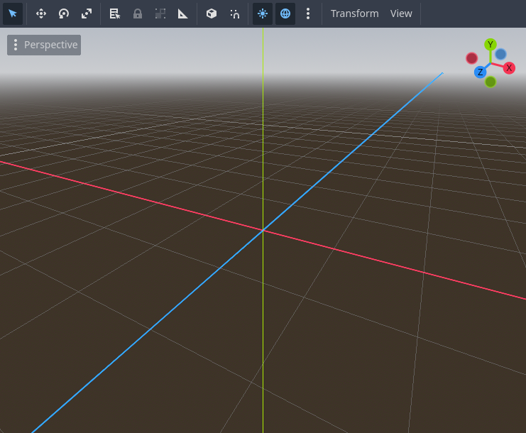
Thanh công cụ này thay đổi tùy theo ngữ cảnh và node được chọn. Đây là thanh công cụ 2D:

Bên dưới là thanh công cụ 3D:

Xem thêm
Để tìm hiểu thêm về workspace, hãy đọc Năm màn hình chính.
Xem thêm
Để tìm hiểu thêm về viewport 3D và 3D nói chung, hãy đọc Giới thiệu về 3D.
Hai bên viewport là các dock. Và ở dưới cùng cửa sổ là bảng dưới cùng (bottom panel).
Hãy cùng xem các dock. Dock FileSystem liệt kê các tệp trong dự án của bạn, bao gồm script, hình ảnh, mẫu âm thanh và nhiều thứ khác:

Dock Scene liệt kê các node của scene đang hoạt động:
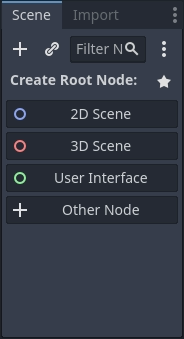
Inspector cho phép bạn chỉnh sửa thuộc tính của node được chọn:
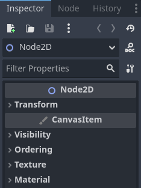
Xem thêm
Để đọc thêm về Inspector, hãy xem Inspector Dock.
Xem thêm
Các dock có thể được tùy chỉnh. Đọc thêm tại Di chuyển và thay đổi kích thước dock.
Bảng dưới cùng, nằm bên dưới viewport, là nơi chứa console gỡ lỗi, trình chỉnh sửa hoạt ảnh, bộ trộn âm thanh và nhiều thứ khác. Chúng có thể chiếm nhiều không gian quý giá, vì vậy mặc định chúng được thu gọn:

Khi bạn nhấp vào một bảng, nó sẽ mở rộng theo chiều dọc. Bên dưới, bạn có thể thấy trình chỉnh sửa hoạt ảnh đang mở:

Các bảng dưới cùng cũng có thể được hiện hoặc ẩn bằng các phím tắt được định nghĩa trong Editor Settings > Shortcuts, thuộc danh mục Bottom Panels.
Năm màn hình chính
Có năm nút màn hình chính nằm ở giữa phía trên trình chỉnh sửa: 2D, 3D, Script, Game và Asset Library.
Bạn sẽ dùng màn hình 2D cho mọi loại game. Ngoài game 2D, màn hình 2D còn là nơi bạn xây dựng giao diện.

Trong màn hình 3D, bạn có thể làm việc với mesh, đèn và thiết kế màn chơi cho game 3D.
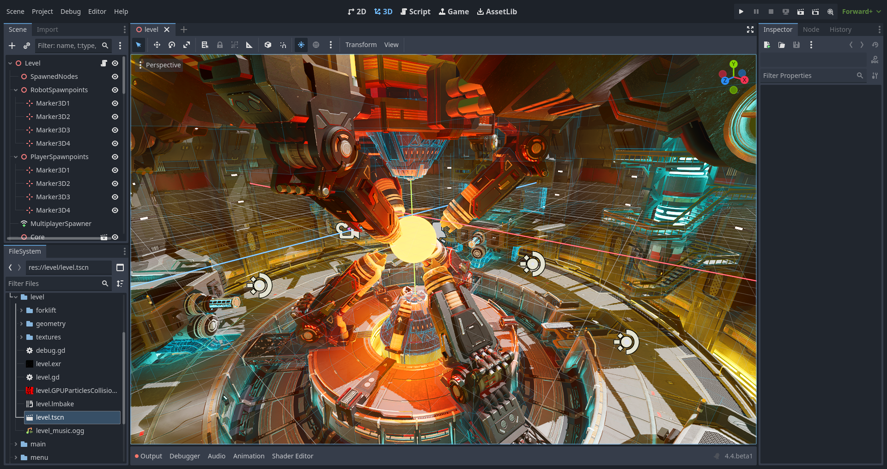
Ghi chú
Đọc Giới thiệu về 3D để biết thêm chi tiết về màn hình chính 3D.
Màn hình Game là nơi dự án của bạn hiển thị khi chạy từ trình chỉnh sửa. Bạn có thể chơi qua dự án để kiểm thử, tạm dừng và điều chỉnh theo thời gian thực. Lưu ý rằng màn hình này dùng để thử xem các điều chỉnh hoạt động thế nào; mọi thay đổi thực hiện ở đây sẽ không được lưu khi game dừng chạy.
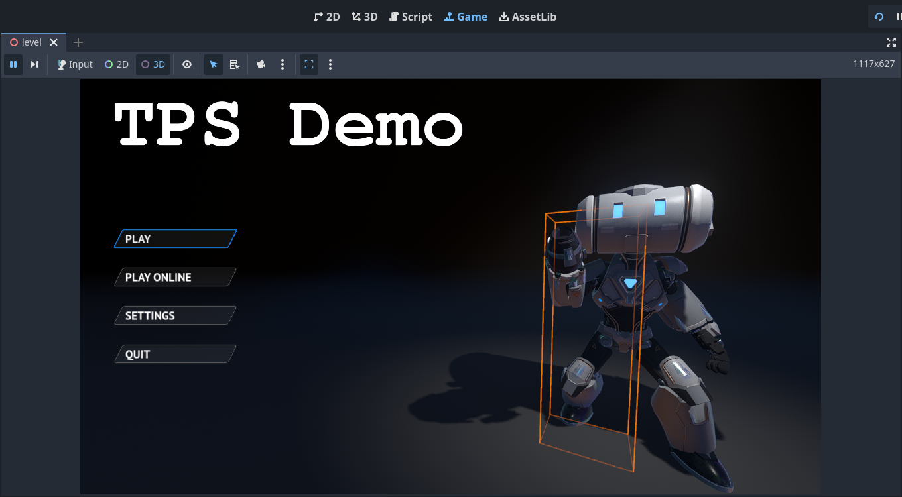
Màn hình Script là một trình soạn thảo code hoàn chỉnh với trình gỡ lỗi, tính năng tự động hoàn thành mạnh mẽ và tài liệu tham khảo code tích hợp sẵn.
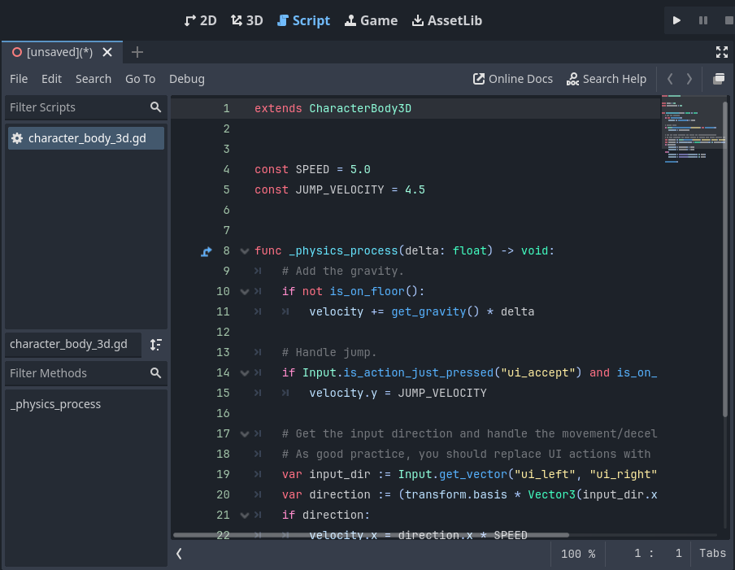
Cuối cùng, Asset Library là thư viện các addon, script và asset miễn phí, mã nguồn mở để dùng trong dự án của bạn.

Xem thêm
Bạn có thể tìm hiểu thêm về thư viện asset tại Giới thiệu về Asset Library.
Tài liệu tham khảo lớp tích hợp
Godot đi kèm với một tài liệu tham khảo lớp tích hợp sẵn.
Bạn có thể tìm kiếm thông tin về một lớp, phương thức, thuộc tính, hằng số hoặc signal bằng một trong các cách sau:
Nhấn F1 (hoặc Opt + Space trên macOS, hoặc Fn + F1 với laptop có phím Fn) ở bất kỳ đâu trong trình chỉnh sửa.
Nhấp vào nút "Search Help" ở góc trên bên phải của màn hình chính Script.
Nhấp vào menu Help và chọn Search Help.
Ctrl + Click (Cmd + Click trên macOS) vào tên lớp, tên hàm hoặc biến có sẵn trong trình soạn thảo script.
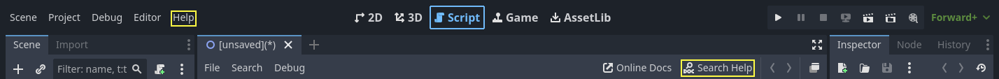
Khi bạn làm bất kỳ cách nào trong số này, một cửa sổ sẽ bật lên. Gõ để tìm kiếm bất kỳ mục nào. Bạn cũng có thể dùng nó để duyệt các đối tượng và phương thức có sẵn.
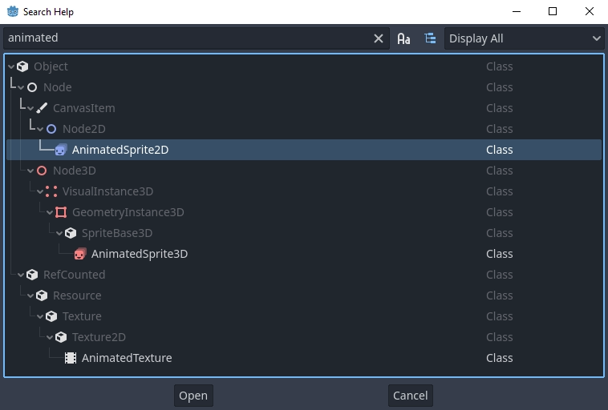
Nhấp đúp vào một mục để mở trang tương ứng trong màn hình chính script.
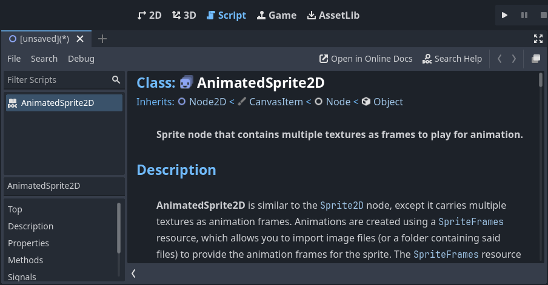
Ngoài ra,
Nhấp chuột trong khi giữ Ctrl (Cmd trên macOS) vào tên lớp, tên hàm hoặc biến có sẵn trong trình soạn thảo script.
Nhấp chuột phải vào node và chọn Open Documentation, hoặc chọn Lookup Symbol cho các phần tử trong trình soạn thảo script, sẽ mở trực tiếp tài liệu của chúng.